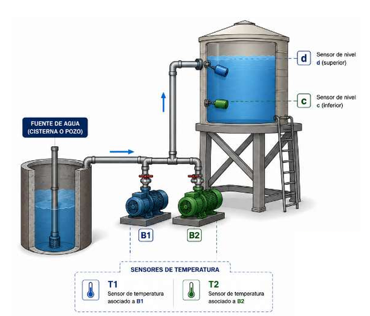
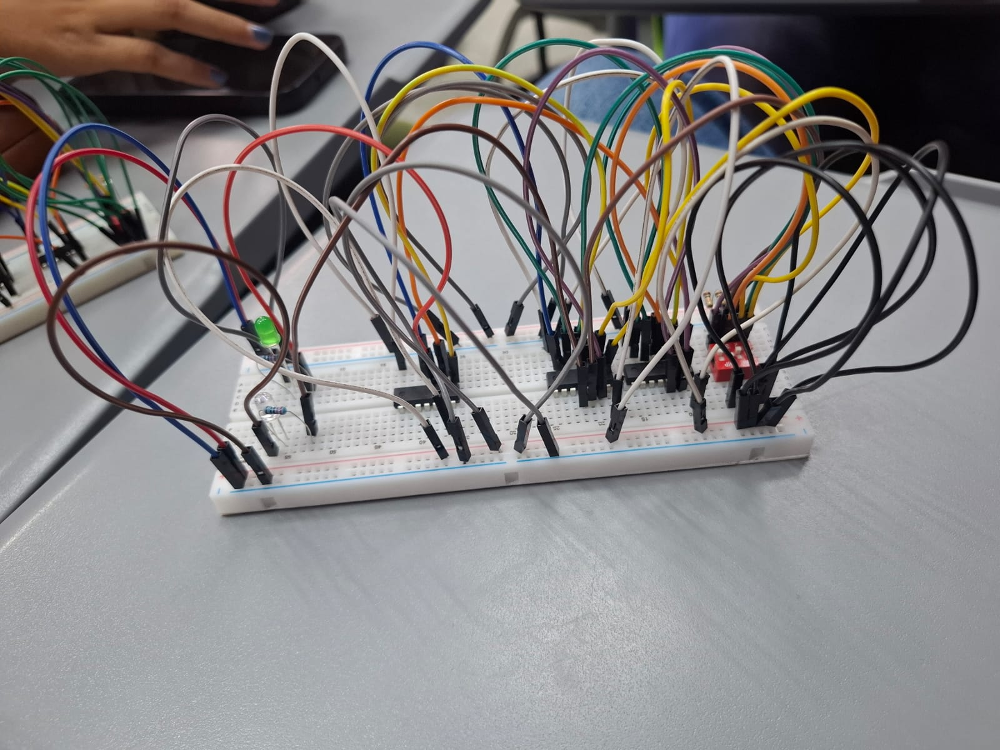

Bueno, para empezar, este proyecto consistía en analizar, diseñar e implementar un circuito lógico combinacional a partir de un problema planteado. Básicamente, el trabajo se dividía en tres partes principales: primero entender el planteamiento del problema, después resolverlo utilizando Álgebra de Boole o mapas de Karnaugh para simplificar las funciones lógicas, y finalmente crear el circuito físico utilizando compuertas lógicas como AND, OR y NOT.
En mi caso me tocó el problema 2, que trataba sobre el control de dos bombas de agua llamadas B1 y B2 dentro de un complejo residencial. El circuito debía tomar decisiones dependiendo del nivel del agua y de la temperatura de las bombas, utilizando sensores de nivel y sensores de temperatura.

Sinceramente, al principio el problema parecía más simple de lo que realmente era, porque cuando uno empieza a analizar todas las condiciones se da cuenta de que había demasiados casos diferentes que tomar en cuenta. Por ejemplo, si el agua estaba entre ciertos niveles debía funcionar una bomba, pero si la temperatura aumentaba demasiado entonces esa bomba se apagaba y se activaba la otra. Además, si el tanque estaba lleno no debía funcionar ninguna bomba, y si existía un fallo en los sensores también había que detener todo el sistema para evitar errores.
Entonces, lo primero que hice fue identificar todas las variables de entrada y salida del circuito. Las entradas eran los sensores de nivel y temperatura, mientras que las salidas eran las bombas B1 y B2. Después tocó hacer la tabla de verdad, que sinceramente fue una de las partes más cansadas porque había que analizar combinación por combinación para asegurarse de que todo tuviera sentido y no contradijera alguna condición del problema.
Luego vino la parte de Álgebra de Boole y mapas de Karnaugh, que básicamente servían para simplificar las expresiones lógicas y hacer que el circuito utilizara menos compuertas. Y aunque en teoría suena sencillo, hubo momentos donde uno terminaba viendo letras y números por tanto tiempo que ya ni sabía qué estaba simplificando. Pero al final sí ayudó bastante a entender cómo reducir procesos y hacer el circuito más eficiente.
Después de obtener las funciones simplificadas, tocó diseñar el circuito lógico y llevarlo a la parte física usando compuertas AND, OR y NOT. Y sinceramente, esa fue probablemente la parte más entretenida del proyecto, porque ya no era solo teoría o tablas, sino ver cómo todo empezaba a funcionar de verdad. Aunque también daba miedo conectar algo mal y que el circuito dejara de funcionar por completo.

Algo que dejó bastante aprendizaje fue entender cómo la lógica digital está presente en muchísimas cosas que usamos todos los días y que normalmente ni pensamos cómo funcionan. Porque al final, sistemas como alarmas, sensores, controles automáticos o incluso partes de una computadora trabajan siguiendo este mismo tipo de lógica. ¿Cuántas veces uno usa tecnología todos los días sin imaginarse toda la lógica que existe detrás de algo tan “simple”?
Además, este proyecto también ayudó a desarrollar bastante la paciencia, porque encontrar errores en tablas de verdad o conexiones físicas puede desesperar muchísimo. Había momentos donde parecía que todo estaba correcto y aun así el circuito no funcionaba como debía. Pero justamente ahí fue donde más se aprendió, porque tocaba revisar paso por paso hasta encontrar el problema.
Y aunque sí terminó siendo algo cansado entre tablas, simplificaciones y cables por todos lados, creo que fue uno de esos proyectos que sí ayudan a entender cómo la teoría realmente puede convertirse en algo funcional y aplicado a situaciones reales.